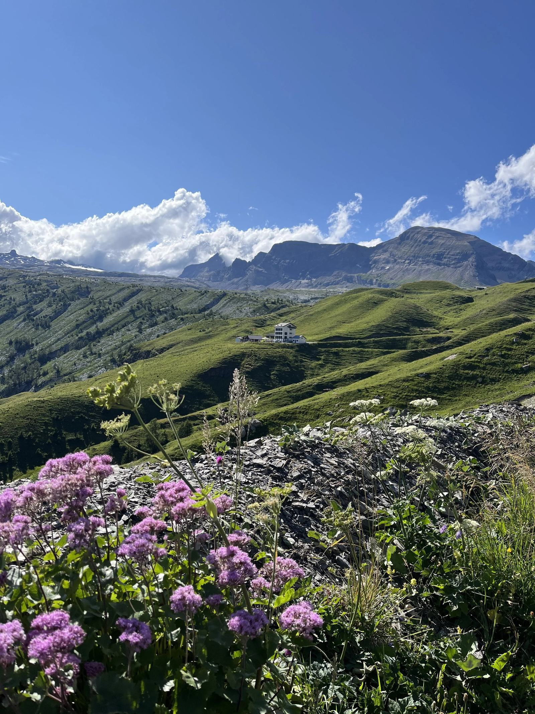
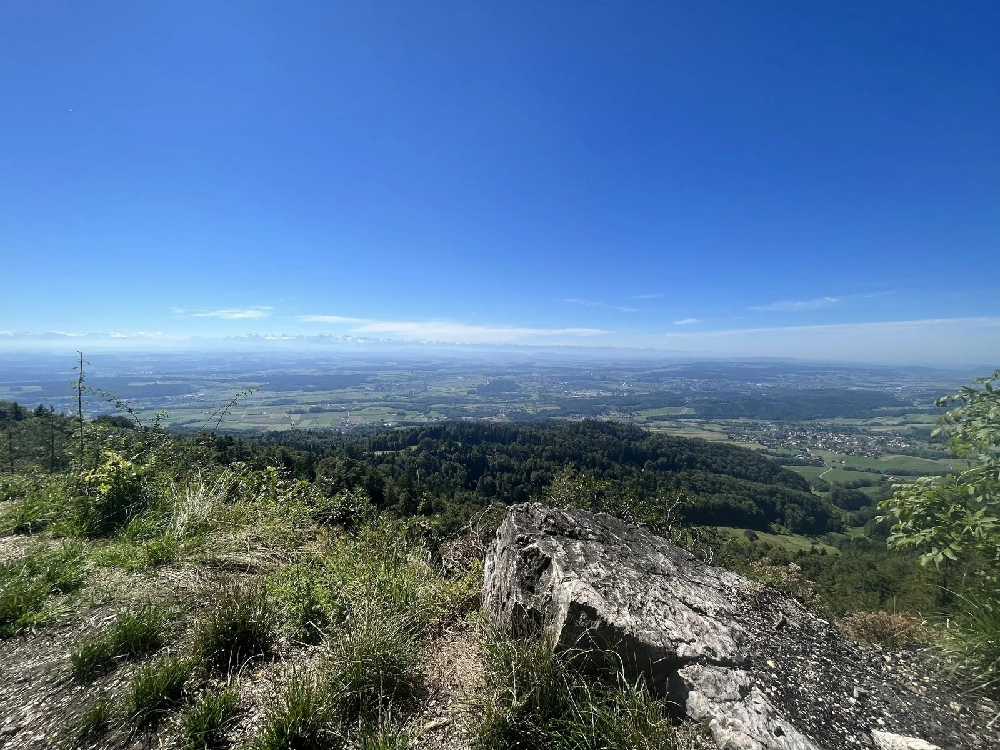
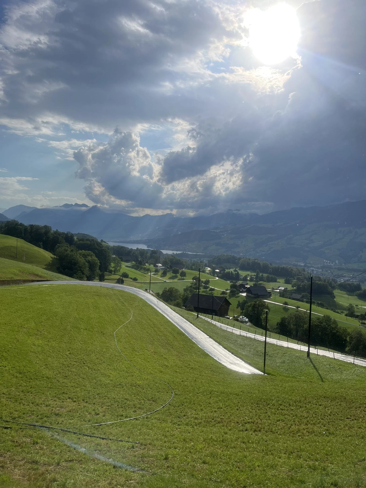
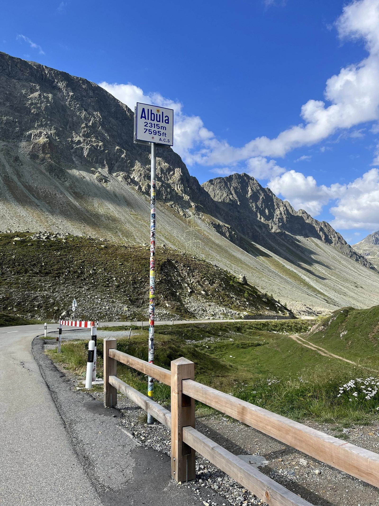
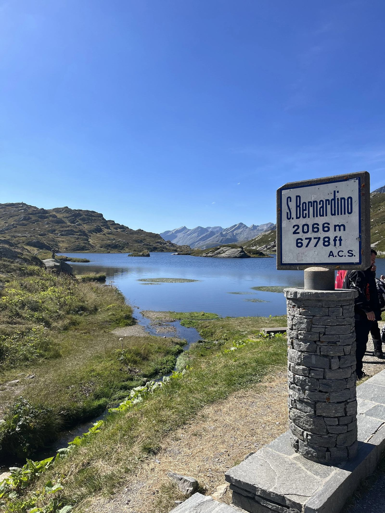
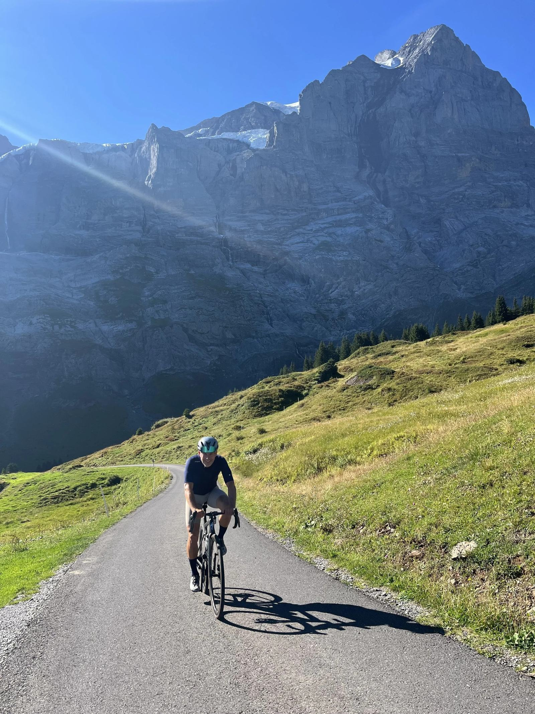
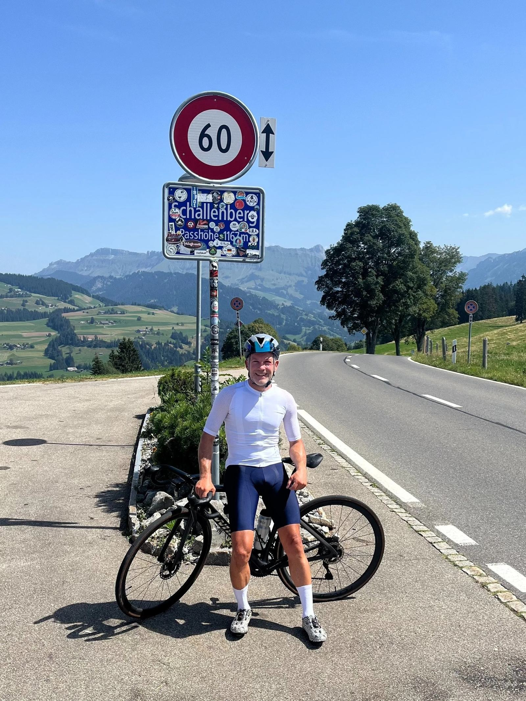

124 Schweizer Pässe in 21 Tagen
Ich habe mir ein Ziel gesetzt, das über das Gewöhnliche hinausgeht: eine Reise von meinem Zuhause in Zermatt bis zu meinen Wurzeln in Bern, über alle 124 offiziellen Schweizer Strassenpässe.
Mit durchschnittlich 88 Kilometern und 2'600 Höhenmetern pro Tag und fast fünf Stunden im Sattel war die Reise auch eine körperliche Herausforderung. Vor allem aber wollte ich die Schweiz, meine Heimat, auf eine neue Weise kennenlernen. Unterwegs habe ich jeden Tag aufgeschrieben, was ich erlebt habe.
Als ich die Routen im Winter und Frühjahr 2023 plante, waren es offiziell 124 Pässe. Heute sind es 120: Tüfletehöchi, Buuseregg, Wintersingenegg und Rumpelhöchi stehen nicht mehr im Verzeichnis.
Das Tagebuch

Tag 1Hoch hinaus zum Auftakt: Simplon und Col du Sanetsch Tag 2Vier Pässe, Ein Tag: Eine Fahrt unter Regentropfen und über gigantische Stauseen
Tag 2Vier Pässe, Ein Tag: Eine Fahrt unter Regentropfen und über gigantische Stauseen
 Tag 3Vier Pässe und ein Zug: Martignys alpine Schönheiten
Tag 3Vier Pässe und ein Zug: Martignys alpine Schönheiten
 Tag 4Sieben Pässe und der Puls der Zeit: Ein verregnetes Uhrwerk-Abenteuer
Tag 4Sieben Pässe und der Puls der Zeit: Ein verregnetes Uhrwerk-Abenteuer
 Tag 5Sieben Pässe und eine unerwartete Umleitung: Ein kühler Tag inmitten militärischer Erinnerungen
Tag 5Sieben Pässe und eine unerwartete Umleitung: Ein kühler Tag inmitten militärischer Erinnerungen
 Tag 6Zwischen Gantrisch und Jura: Ein Ritt durch zwei faszinierende Landschaften
Tag 6Zwischen Gantrisch und Jura: Ein Ritt durch zwei faszinierende Landschaften
 Tag 7Sonnenstrahlen, Begegnungen und ein fehlendes Denkmal
Tag 7Sonnenstrahlen, Begegnungen und ein fehlendes Denkmal

Tag 8Über Weissenstein, Scheltenpass und Co: Herausfordernde Pässe und Atemberaubende Aussichten Tag 9Ein Tag voller Herausforderungen: Von Olten bis zu den steilen Hängen des Jura
Tag 9Ein Tag voller Herausforderungen: Von Olten bis zu den steilen Hängen des Jura
 Tag 10Ein erneutes Rennen gegen die Pässe und das Wetter
Tag 10Ein erneutes Rennen gegen die Pässe und das Wetter

Tag 11In Napoleons Spuren und ein unerwartetes Gewitter Tag 12Unerwartete Begegnungen und Routenänderungen
Tag 12Unerwartete Begegnungen und Routenänderungen
 Tag 13Rasante Abfahrten und Gewitterfluchten
Tag 13Rasante Abfahrten und Gewitterfluchten
 Tag 14Erholung im Angesicht der Grossen Alpenpässe
Tag 14Erholung im Angesicht der Grossen Alpenpässe
 Tag 15Ein Wechselbad der Gefühle in den Höhen der Alpen
Tag 15Ein Wechselbad der Gefühle in den Höhen der Alpen

Tag 16Eine Fahrt mit Gedenken, Verkehr und Begegnungen
Tag 17Ein inspirierender Tag voller Natur und Begegnungen Tag 18Gotthardpass: Der Mythos und andere Entdeckungen
Tag 18Gotthardpass: Der Mythos und andere Entdeckungen
 Tag 19Königsetappe: Ikonen der Schweizer Pässe
Tag 19Königsetappe: Ikonen der Schweizer Pässe

Tag 20Die Vorfreude des Endes: Vom Berner Oberland ins Entlebuch
Tag 21Eine emotionale Rückkehr durch die Heimat bis zur Hauptstadt